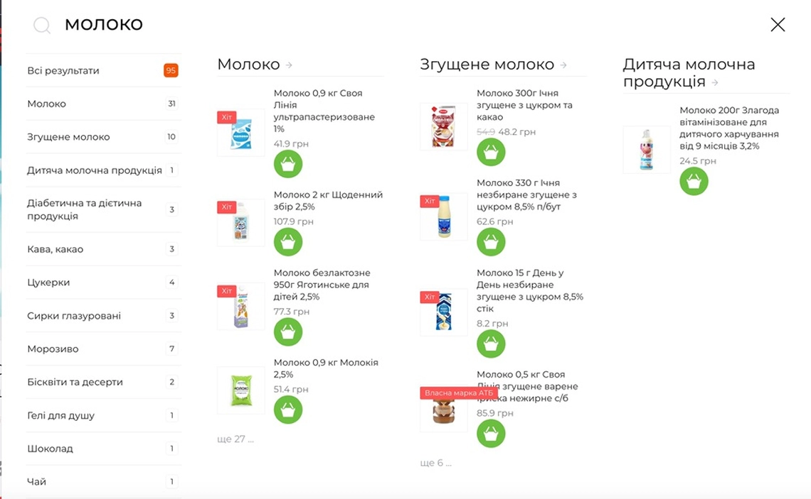
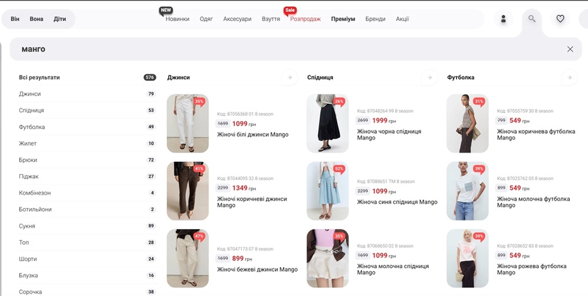
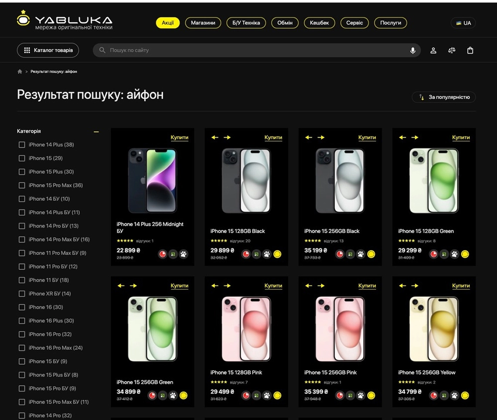
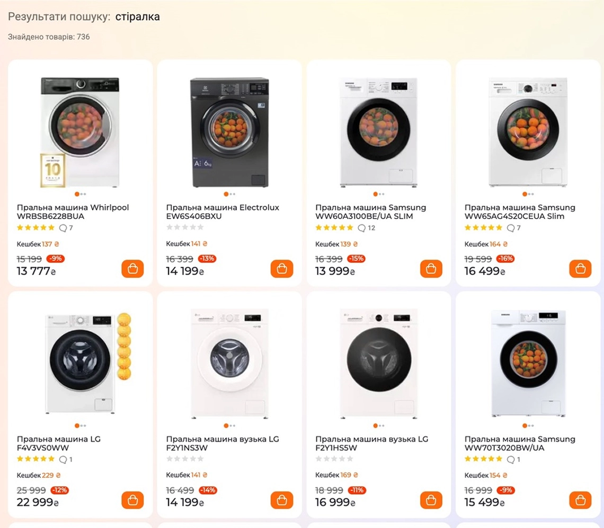
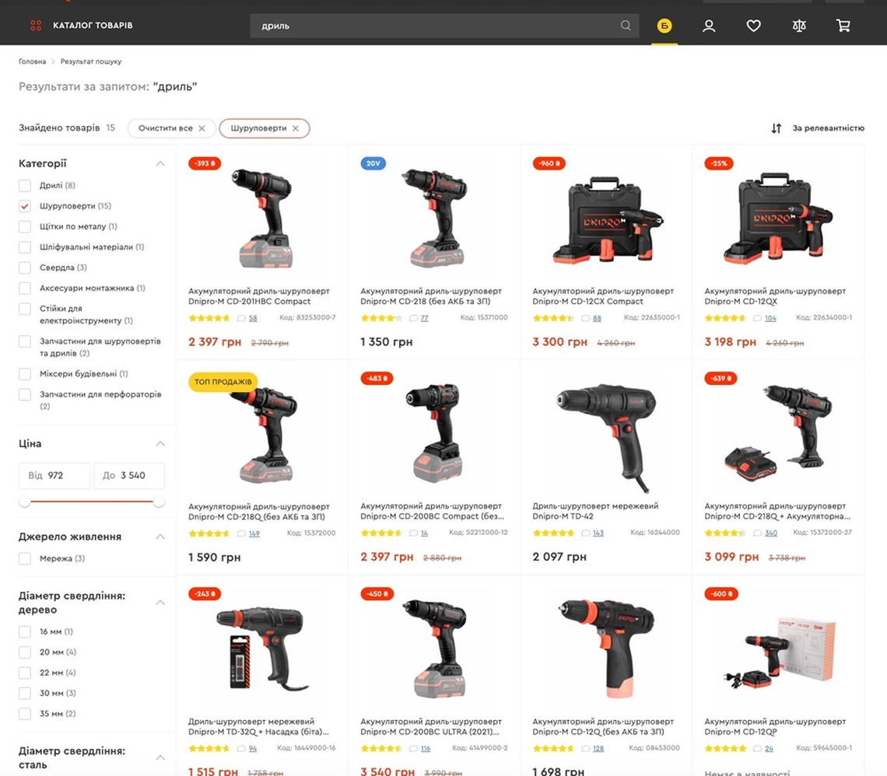
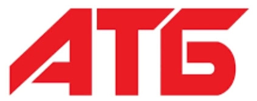
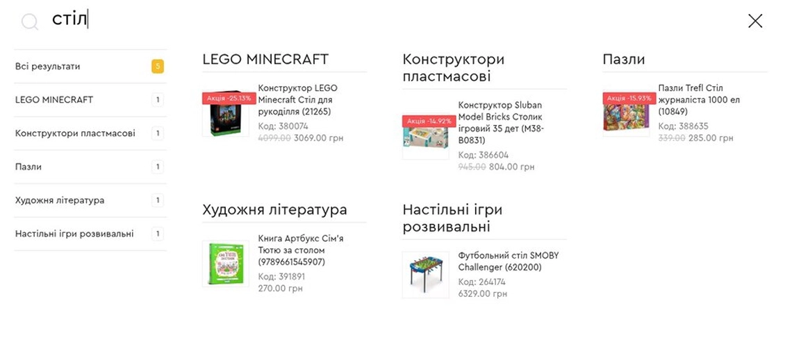
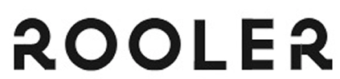
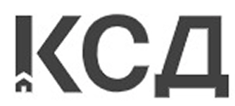

Що обрати для smart-пошуку — плагін чи API?
Вводите букву "К" в пошук — і бачите “ковдру” замість “конструктора”? Одна й та сама літера, а результати наче з двох паралельних світів. Можливо, справа в типі пошуку. Розказуємо, як обрати інтеграцію розумного пошуку під реальні потреби бізнесу.
Плагін
Віджет, який підключається до сайту як єдиний блок пошуку. Головна місія — швидко інтегрувати базову версію. Достатньо вставити скрипт Multisearch, і він змінить стандартну версію пошуку.
1 — Інтегрується менш ніж за 15 хвилин — підходить для будь-якої CMS і не потребує залучення програмістів.
2 — Охвачує всі товари та категорії у вашій CMS / базі даних — робить видачу більш релевантною.
3 — Оперує повною видачею — показує всі товари, які відповідають запиту, без обмежень по кількості.
4 — Змінює вигляд через перевизначення CSS-стилів — дозволяє адаптувати оформлення пошукового рядка.

Для кого і для чого?
- Для магазинів нішевих товарів
- Для малого та середнього бізнесу
- За відсутності штатних розробників
- Коли бракує часу на впровадження
- Якщо треба смарт-пошук “тут і зараз”
Ідеальний для бізнесів зі спеціалізованим асортиментом. Наприклад: білизна, парфуми, канцелярія. Доступна швидка візуалізація товарів при звуженій видачі — без гортання та з фільтрацією “за категорією”.

АРІ
Конструктор з набором деталей, які розширюють пошукові можливості та посилюють маркетинг. Головна місія — ваш контроль над логікою та візуалом розумного пошуку незалежно від архітектури сайту.
1— Підтримує інтеграцію з будь-якими e-commerce-функціями — від додавання товарів у кошик прямо зі сторінки пошуку до різних видів фільтрації й посторінкової видачі.
2 — Кастомізує кожен елемент — ви контролюєте логіку пошуку, сортування товарів, підказки, дизайн сторінки та взаємодію з іншими модулями сайту.
3 — Робить доступною глибоку аналітику — дозволяє відстежувати всі дії користувача через Google Analytics, GTM чи власні метрики: від кліку по підказці до купівлі.
4 — Обходить обмеження платформи — API працює із сайтами будь-якого типу: React, Vue, Laravel, Shopify, Headless CMS тощо.

Для кого і для чого?
- Для будь-яких сайтів і маркетплейсів
- Для e-commerce з високим трафіком
- Коли треба додаткові інструменти для маркетингу
- Якщо принципово зберегти унікальний стиль
- Для сайтів з нестандартною архітектурою
Незамінний для масштабування. Завдяки API можливості пошуку виходять на новий рівень. Маркетинг набуває суперсили, коли Multisearch налаштовує для вас синоніми під нішу, динамічні фільтри та інші пошукові фішки. Або ж ви самі обираєте, який набір інструментів увімкнути.


Також API підтримує функціонал, який працює на базі АІ (Machine Learning). Отже ви можете аналізувати поведінку користувачів і пропонувати товари, які покупці готові вже зараз покласти до кошика.
Гібридна інтеграція
Поєднання плагіна + сторінки результатів по API. У роботі з пошуком на сайті досвід користувача (UX) — ключове. Від того, як система допомагає юзеру знайти товар і наскільки комфортно це відбувається — залежать продажі. Ось чому команда Multisearch передбачила також змішаний тип інтеграції.
До прикладу, atbmarket.com рухались від найпростішого: спочатку інтегрували плагін, а потім поєднали його з API.

Інтеграція плагіна не була складною: встановили скрипт, протестували, запустили на проді. Інтеграція по API була складнішою, але також обійшлася без великих труднощів.
Як це працює?
- Гібридна інтеграція дає можливість переходу з плагіна пошуку через Enter на сторінку результатів.
- “А чому пошук не підказує, коли я друкую?”, — найпоширеніше запитання, яке чує команда підтримки.
- ◼️ Лише в плагіні ця функція неможлива — треба клікати, щоб перейти на товар або категорію. Клієнт встановлює пошук, формує запит в рядку, тисне Enter — однак нічого не відбувається.
- ◼️ Плагін та автопідказки — зовсім різні інструменти. Їх часто плутають через спільні функції: побуквенну видачу та режим ріалтайм. Але обидві фічі не можуть бути увімкнені одночасно — потрібен повний перехід на API.
Плагін VS Автопідказки
Плагін → повна видача: всі товари відповідно до запиту.
Автопідказки → звужена видача: по 3-5 товарів на запит.
Плагін → повна видача: всі товари відповідно до запиту.
Автопідказки → звужена видача: по 3-5 товарів на запит.
Плагін → надає готовий результат: аналізує всі товари, які знайшов.
Автопідказки → вгадують запит користувача за кількома символами.

З плагіном система пошуку опрацьовує будь-який запит як повноцінний навіть з 1 літери: до нього застосовуються алгоритми транслітерації, морфології, виправлення помилок, зміни розкладки тощо. На основі такого запиту відображаються релевантні товари.
Автопідказки з першої літери прогнозують запити та пропонують ймовірні продовження назв товарів, категорій та брендів. І доступні винятково через АРІ.
Гібридизація може бути проміжним рішенням для переходу від плагіна до розумних автопідказок.
Наприклад, швидким запитам буває в плагіні легше отримати результати. Однак підказки в свою
чергу можуть пропонувати розширення та надавати контексту.
Гібридність — це про зручність користувача, який не завжди очікує отримати "імітацію"
автопідказок.
Часом клієнт хоче по-різному опрацювати один і той самий запит або подивитися видачу в
плагіні та побачити результати в пошуку.
На кожен запит — своє рішення
- Плагін, API чи гібридна інтеграція мають окремі переваги. Все залежить від сайту, можливостей команди та бізнес‑цілей.
- + Плагін — щоб прокачати пошук оперативно і без програмістів.
- + Гібрид — коли потрібен розумний пошук з мінімальною кастомізацією.
- + API — якщо необхідна максимальна гнучкість і повний контроль маркетингу.
Що кажуть клієнти Multisearch з різним досвідом інтеграції смарт-пошуку?
Плагін-рішення → zolotoyvek.ua
Ми шукали максимально швидке та гнучке рішення, яке дозволяє протестувати функціонал без глибокого залучення розробників. Плагінова інтеграція ідеально вписалась у наші вимоги з точки зору швидкого запуску та масштабування.
Установка була справді простою: завдяки готовому рішенню та підтримці команди Multisearch ми змогли інтегрувати пошук менш ніж за тиждень. Важливо, що це не потребувало змін у бекенді — все реалізується через фронт.
Топ-3 переваги плагін-інтеграції
- + Мінімальні ресурси команди з нашого боку.
- + Можливість адаптувати логіку та дизайн без зайвих складностей.
- + Користувачі знаходять товари швидше, що позитивно впливає на конверсію.
Плагін | Плагін + АРІ → ars.ua
Обрали саме плагінове рішення для інтеграції, тому що це був найшвидший і найпростіший спосіб перевірити ефективність Multisearch.
Для установки не довелось навіть залучати розробників, просто встановили скрипт через адмін-панель, використовуючи стандартні засоби екомерс-платформи.
Головні переваги плагін-інтеграції: швидкість встановлення та самодостатня функціональність плагіну з усіма життєво необхідними функціями.
Спочатку обрали плагін, а потім зробили вибір на користь АРІ.
Проаналізували поведінку користувачів та різницю в результатах пошуку від Multisearch та штатного платформи.
Через те, що достатньо багато користувачів відвідували сторінку результатів пошуку, яка відрізнялась результатами від плагіну, прийняли рішення повноцінно інтегруватись по API, щоб результати пошуку усюди були консистентні.
Плагін | Плагін + АРІ | Розумні автопідказки → rooler.ua

З ціллю оптимізації витрат на розробку і щоб зрозуміти чи точно рішення нам підходить, ми обрали плагін. Якщо оцінювати часовий проміжок, то це було доволі швидко, порівняно з іншими зовнішніми системами.
Ключовим моментом до переходу стало бажання реалізувати Автопідказки. Динамічні фільтри також працюють тільки через APІ.
Для нашого сайту на початковому етапі розробки вже було зрозуміло, що ми будемо використовувати ваш пошук, і дизайн вашого пошуку нам подобався. Тому навіть після переходу на API ми дизайн вікна зробили у вашому стилі.
Плагін | АРІ → ksd.ua

Плагінове рішення було для швидкої інтеграції на старому сайті. Це незалежність від технічних характеристик платформи та відсутність потреби лізти в код.
Чому пізніше зробили вибір на користь АРІ?
Бо виникла потреба більш гнучкого налаштування (сайт + апки).
Хочете, щоб пошук продавав як топовий маркетолог?
Залишайте заявку — підкажемо, який тип інтеграції збільшить конверсії вашого сайту та зробить нових клієнтів постійними.